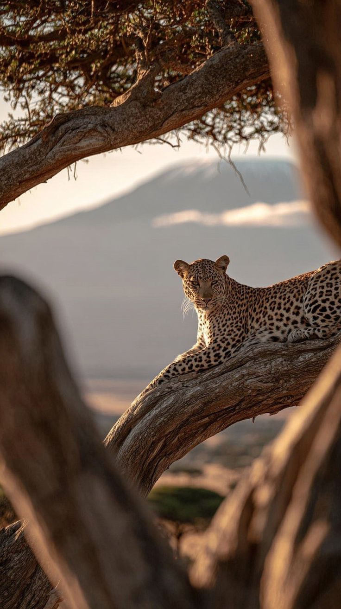
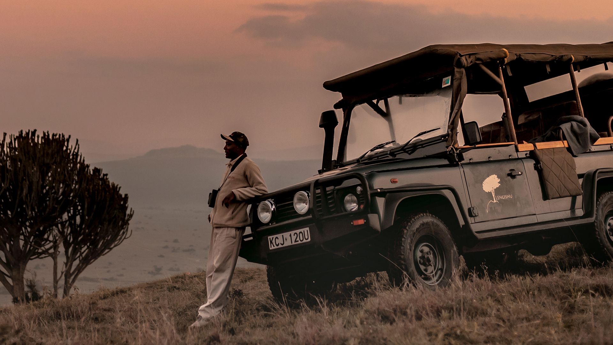
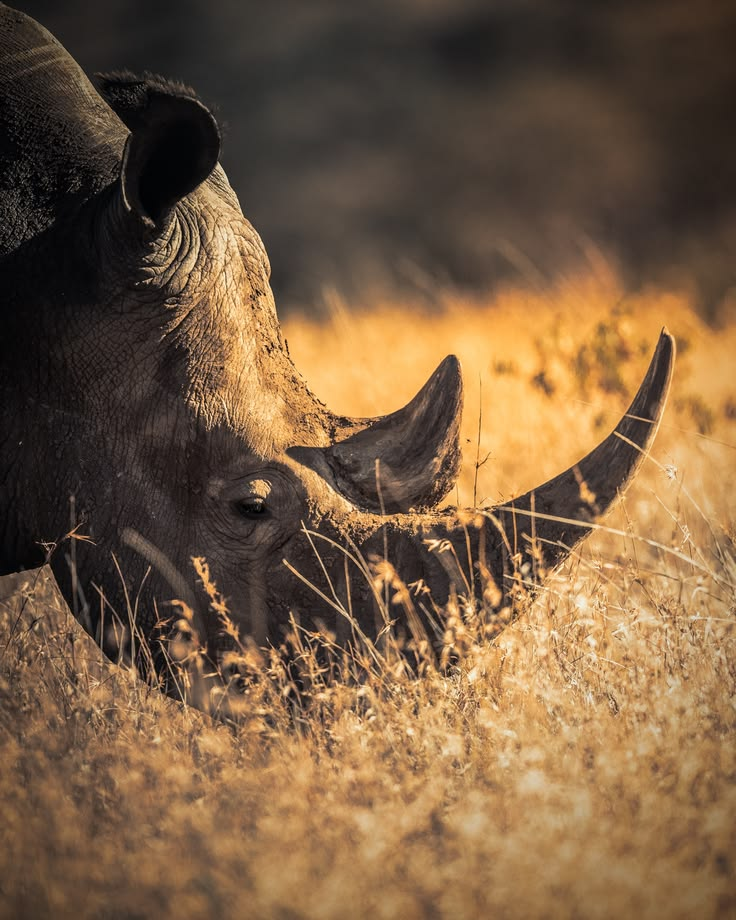
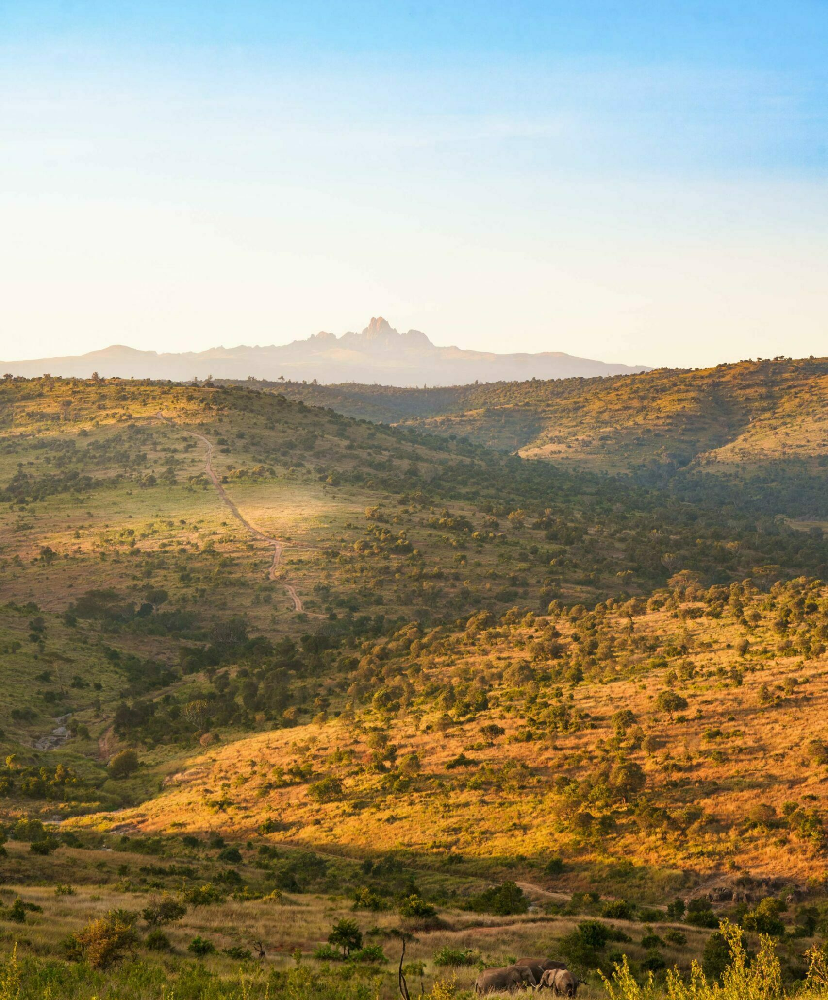
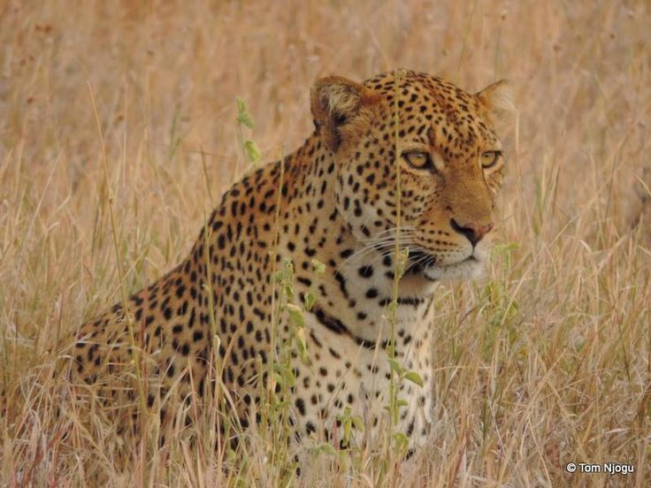
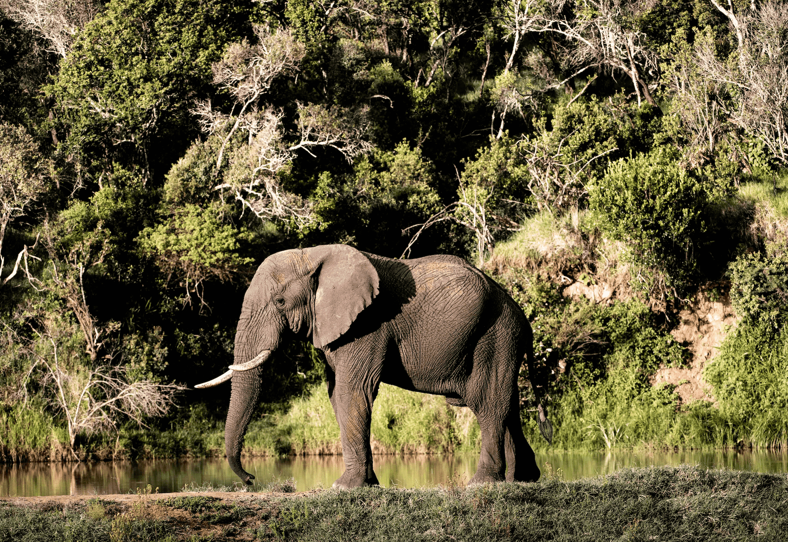
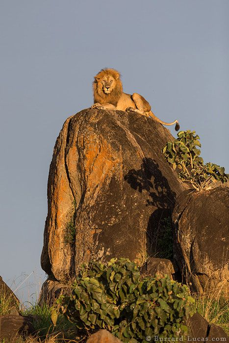

Tracking Rhino on Foot, at Dawn
Walk with the anti-poaching team at first light, learning how black and white rhino are tracked, identified and protected in Kenya's most successful sanctuary. Roughly 1.5 to 2 hours, with a high chance of a sighting.
Laikipia Maasai · Mukogodo Forest · Est. 2002
I'm Nissa Ole Kinyaga, a Silver Guide and one of only 59 in all of Kenya. I lead guests through the wild heart of the 32,000-acre Borana Conservancy at Lengishu.
The Story
I was born in the Mukogodo Forest of Northern Kenya, a Laikipiak Maasai of the Il Ngwesi. The bush raised me before any classroom did. My first role in conservation was as a radio signaller at Lewa Wildlife Conservancy, listening, learning the land, watching how people and wildlife could thrive together.
I went on to Kenya Utalii College for my Advanced Tour Guiding Certificate, and I kept going after that. Ornithology, walking wild safaris, astronomy, first aid. In 2002 I became a full-time guide. Today I lead at Lengishu, in the heart of Borana, Kenya's newest and most successful rhino sanctuary, as one of just 59 Silver Guides in the country.
“It's wonderful that I can provide for my family doing what I love. Knowing that my job has purpose, that I am making a difference every day.”
The Journey
Lewa Wildlife Conservancy. First ears on the bush, coordinating teams and learning the rhythm of the land.
Advanced Tour Guiding Certificate, the formal foundation beneath a lifetime of bush knowledge.
The beginning of a professional career guiding guests through Northern Kenya's wild places.
Ornithology, walking wild safaris, astronomy and first aid. Depth across every discipline of the field.
Leading conservation safaris on the 32,000-acre Borana Conservancy. Top-tier certification, hands in the work.
In the Field
From dawn rhino tracking on foot to helicopter horizons, Borana opens in countless ways.
Walk with the anti-poaching team at first light, learning how black and white rhino are tracked, identified and protected in Kenya's most successful sanctuary. Roughly 1.5 to 2 hours, with a high chance of a sighting.
Big Five by day; porcupine, honey badger and leopard after dark.
The small details of the ecosystem, and the climb to Pride Rock.
Ride among giraffe and zebra with Mount Kenya on the horizon.
The Northern Frontier seen whole, from the air.
Through hills, valleys and herds of zebra.
Still mountain lakes, far above the plains.
Adventure rides through Borana's seasonal sand rivers.
Join the rangers on their evening deployment.
Through the Lens
A few favourite frames from the field across Northern Kenya. Tap any image to see it full size.







Credentials
Favourites in the field
Leopards & wild dogs. The animals I'll always stop the vehicle for.
In Their Words
“Nissa grew up in the community neighbouring Borana and knows the area like the back of his hand. Tracking rhino at first light with him was the most profound thing we have ever done on safari.”
“He educates you out in the field, showing endangered species and how their habitats are preserved. You leave understanding conservation, not just having watched it.”
“A Silver Guide is rare for a reason. Nissa's calm, his eye for a leopard, his stories under the stars. This is guiding at world-class level.”
Conservation Philosophy
“Always be honest, help others, travel sustainably, and share the importance of conservation with younger generations as much as possible. And visit Northern Kenya; it is paradise, one of the most exciting and adventurous parts of Africa.”
Nissa Ole Kinyaga
Wildlife thriving on its own terms, the truest measure of success.
Tourism that supports local communities and livelihoods.
Teaching the next generation to carry the land forward.
Plan a Safari
Tell me what moves you. Rhino at dawn, a leopard at dusk, the southern stars, and I'll shape a journey across Borana around it.
Extra · Extra
The very same story, set in ink as a vintage brutalist broadsheet — The Northern Frontier Gazette, crushed-newsprint and all.
The Northern Frontier Gazette Open the broadsheet →